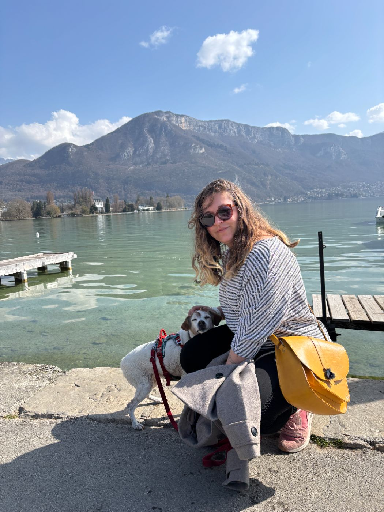
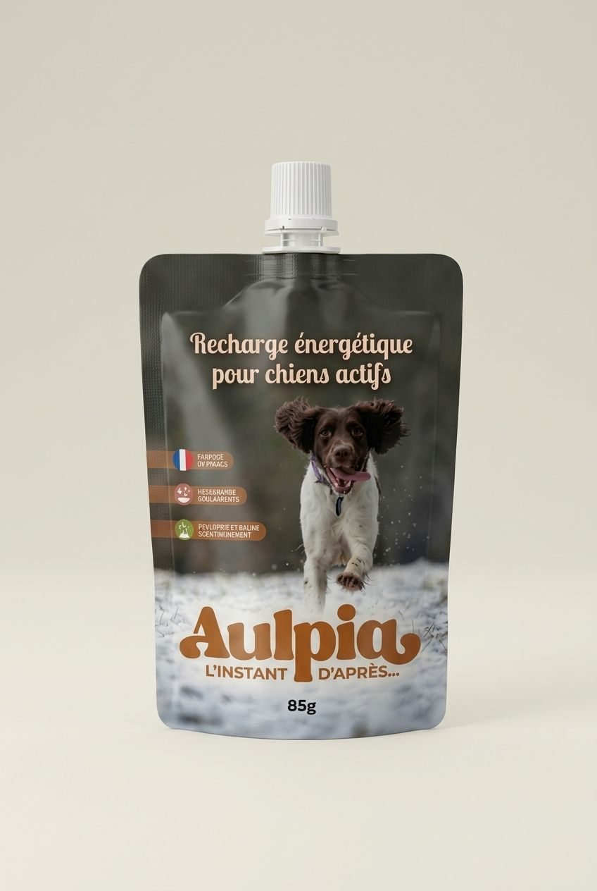

01
Une catégorie qui n'existait pas
Première recharge énergétique formulée pour le chien actif en France. Aucune référence concurrente sur le linéaire.
Canicross, agility, cani-rando, éducation, longues balades, jeux dans le jardin : tes clients ne sont pas tous des compétiteurs, mais leurs chiens bougent, tous les jours. Aulpia est la recharge énergétique pensée pour ce chien-là : celui qui donne de l'énergie au quotidien, pas seulement sur une ligne de départ.
Tarif préférentiel HT pour les boutiques partenaires. Devis sur demande par e-mail.
Aulpia est née en Haute-Savoie, pas dans un bureau marketing. La recette est conçue en Haute-Savoie et fabriquée à Lyon, avec une purée de pommes d'origine France, un miel d'acacia de Savoie et un sel de Guérande.
À ma connaissance, aucun autre produit en France n'est pensé pour ravitailler le chien pendant l'effort. Ce n'est pas une marque de plus dans un rayon déjà plein : c'est un rayon qui n'existait pas. Une poche souple que le chien lèche directement au bec, pour le chien actif du quotidien autant que pour le compétiteur.
Je choisis de vendre Aulpia dans des boutiques indépendantes. Je sais ce que c'est de monter un projet sans investisseurs et sans business plan de quarante pages, de croire en quelque chose avant que ça marche. Une boutique indépendante et une petite marque française, ça se comprend sans longues explications.

Première recharge énergétique formulée pour le chien actif en France. Aucune référence concurrente sur le linéaire.
Formulée par une ASV formée en nutrition animale, validée par une vétérinaire DMV du sport canin.
Quatre ingrédients nommés, producteurs identifiés, zéro additif. La transparence répond seule aux objections.
Sport, randonnée, éducation, hydratation, tapis de léchage l'été : la gourde ne parle pas qu'aux compétiteurs.
3,90 € l'unité : un prix d'impulsion en caisse, qui se transforme en pack multiple au réachat.
Le chien lèche directement au bec. La démonstration se fait en boutique, en dix secondes.
Prix public conseillé TTC. TVA non applicable, art. 293 B du CGI.
« Vous avez vos gels et vos barres pour vos sorties ; votre chien, lui, n'a rien. Ça, c'est la première gourde énergétique pensée pour lui : 85 g de purée de pommes, de dextrose, de miel et d'une pointe de sel, qu'il lèche directement au bec pendant la pause. C'est une ASV formée en nutrition animale qui l'a formulée, et une vétérinaire du sport canin qui l'a validée. »
À donner pendant ou après l'effort. Pour les courses de traction, une moitié peut se donner 30 min avant le départ.
* Les 2 gourdes se répartissent sur la durée de l'effort : l'apport est plus efficace fractionné qu'en une seule prise.
Le bon geste, au bon moment| Sport / usage | Quand la donner | Pourquoi |
|---|---|---|
| TractionCanicross, cani-VTT, cani-trail | Moitié 30 min avant le départ, l'autre moitié à la fin. | L'excitation d'avant-départ et le sprint puisent déjà dans les glucides ; la seconde moitié soutient la récupération, dans les 30 minutes après l'effort. |
| RandonnéeChien libre, marche active en montagne | À partir de 1h30 d'effort, en pause, ou à la fin de la balade. | Le chien parcourt 1,5 à 2 fois la distance de son humain : chaque relance pioche dans les glucides. |
| Sport explosifAgility, ring, dog dancing, flyball | Entre les passages, ou en récupération après la session. | Ces efforts courts mobilisent presque exclusivement les glucides, avec une forte demande cérébrale. |
| Chien senior actifDès 7 ans, activité régulière | Au-delà d'1h d'effort, ou en récupération. | Ses réserves de glucides sont plus petites, se vident plus vite et se reconstituent plus lentement. |
| Balade courte ou cours d'éducationMoins d'1h30 | Après l'effort, en récompense. | Pas une nécessité physiologique : récupération, hydratation et moment complice. |
En cas de doute, oriente le client vers son vétérinaire. Aliment complémentaire pour chiens : ne se substitue pas à un repas.

Commande minimum de 10 gourdes. Pas de contrat d'exclusivité, pas de volume imposé au-delà. Tarif préférentiel HT communiqué sur devis.
Ce sont des glucides, la source d'énergie utilisée à l'effort. Donnés pendant ou juste après la sortie, ils sont consommés au fur et à mesure, pas stockés : 83 kcal, sans stimulant ni caféine.
Les croquettes couvrent les besoins du quotidien, pas le pic de dépense d'une sortie. Les réserves de glucides se vident en 1h30 d'effort intense et ne se rechargent pas depuis le repas du matin.
Au-delà d'1h30 d'effort intense ou de randonnée, 1h chez le chien senior. En dessous, c'est une friandise saine et un coup de main à la récupération.
Non : le diabète et les troubles de l'insuline sont une contre-indication. Ne le vends pas pour cet usage et renvoie vers le vétérinaire.
Non : moins de 0,5 g de matières grasses par gourde, et 83 kcal données au moment où le chien dépense. C'est un apport ponctuel à l'effort, pas un ajout à la ration quotidienne.
1 an à température ambiante, à l'abri de la chaleur et de la lumière. Après ouverture : 3 jours au réfrigérateur.
Non. C'est un aliment complémentaire : 83 kcal, moins de 0,5 g de protéines et de matières grasses. Ça complète la ration, ça ne la remplace jamais.
Non : le risque botulique lié au miel concerne le nourrisson humain, pas le chien. Il est ici présent en petite quantité, surtout pour l'appétence, avec un petit apport de glucides en plus.
Le sodium aide le glucose à franchir la barrière intestinale (co-transport) et renforce l'appétence. Une pointe de sel, sans risque pour un chien sain.
Aucun test en laboratoire. Deux ans de tests terrain, avec mes chiens et des binômes volontaires, sur leurs sorties habituelles.
Purée de pommes et miel : l'appétence est très bonne. Conseille une première fois à la maison, au calme, ou versée sur la gamelle ; certains chiens ont besoin de découvrir le bec.
Une formule développée par une ASV et validée par une vétérinaire, des ingrédients d'origine française, une production en petite série. C'est l'ordre de prix d'un gel énergétique pour humain.
Non, aucun stimulant. La composition se limite à la purée de pommes, au dextrose, au miel et à une pointe de sel : de l'énergie rapidement disponible, sans caféine. Elle ne contient pas de produit dopant pour les courses officielles.
Il n'existe pour l'instant qu'un format, 85 g. Le demi-dosage ajuste l'apport aux petits gabarits, en attendant les formats S, M et L à venir.
La composition est courte et lisible : purée de pommes, dextrose, miel, sel — sans additif, conservateur ni colorant. En cas d'allergie connue à l'un de ces ingrédients, demander l'avis du vétérinaire.
Oui. Comme un gel énergétique humain, elle est calibrée sur le scénario le plus exigeant : ce sont le dosage (½, 1 ou 2 gourdes) et le moment qui s'adaptent au sport, pas le produit.
Oui, une formule de récupération post-effort est en développement : Aulpia 1 pendant l'effort, Aulpia 2 après.
Une question qui n'est pas ici ? Écris-moi à hello@aulpia.fr : la réponse te revient, et rejoint cette page pour toutes les boutiques.
Écris-moi à hello@aulpia.fr, je reviens vers toi avec le tarif préférentiel adapté à ta boutique.
Je lis chaque e-mail qui arrive.